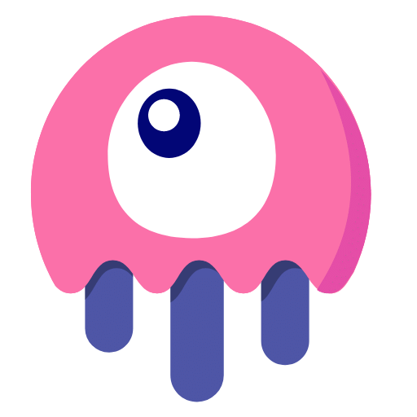

Eventos e Workshops

Desenvolvedor Full Stack PHP
Sou apaixonado por tecnologia, melhores praticas de desenvolvimento e pelo mundo da Web.
Acredito no poder do conhecimento como ferramenta de crescimento individual e em equipe. Por isso, creio que ensinar é aprender duas vezes e o sucesso do outro, pode ser o meu sucesso também.
Sou formado em Análise e Desenvolvimento de Sistemas, com especialização em Engenharia de Software. Trabalho com PHP, desenvolvendo aplicações web utilizando Laravel, Livewire, Inertia e todo o ecossistema que os envolve
GithubConheça as tecnologias que trabalho:
Front-end
Back-end
Databases
Front-end Frameworks
Back-end Frameworks
Tools